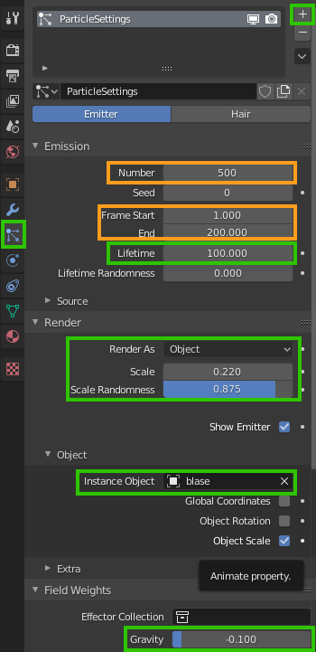
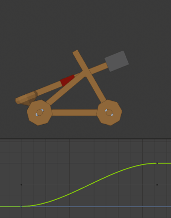
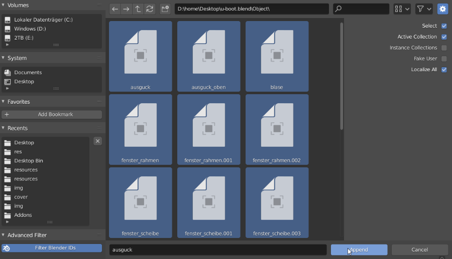

Übung 6.1 - Animation
In dieser Übung wollen wir das U-Boot aus Übung 1 animieren und Partikelsysteme nutzen, um Blasen zu erzeugen
Vorbereitung
- Öffnet euer U-Boot. Falls ihr im Laufe der Übung feststellt, dass sich euer Modell nicht für die Aufgabe eignet, könnt ihr dieses Beispielmodell verwenden.
1. Schiffsschraube
1.1 Schraube modellieren
- Falls noch nicht geschehen, modelliert eine einfache Schiffsschraube für das U-Boot
Hilfreich ist hierfür, den Pivot-Point auf 3D Cursor zu stellen, um die drei einzelnen Rotorblätter je um 120° um diesen zu drehen.
Achtet darauf, dass der Origin Punkt der Schiffsschraube in deren Mitte sitzt. Wählt dafür Object → Set Origin → Origin to Geometry
Schiebt die Schiffsschraube an die richtige Stelle und ordnet sie dem U-Boot hierarchisch unter.
Gebt ihr ein passendes Material
1.2 Schraube animieren
Da wir für die Schiffsschraube eine konstante Drehung verwenden wollen, lässt sich hier ein Ausdruck verwenden, der einfach den aktuellen Frame als Controller für die Rotation der Schraube verwendet.
- Das funktioniert in Blender, in dem für den entsprechenden Wert (hier die Rotation auf der Y-Achse - probiert aus welche Achse für euch die Richtige ist.) #frame/5 eingegeben wird. Desto höher der Nenner, desto langsamer die Drehung.
- Wird die Animation nun mit
Leertastegestartet, sollte sich die Schiffsschraube drehen.
2. Blubber
2.1 Blase
Unser U-Boot soll nun blubbern.
- Fügt eine Kugel hinzu und gebt ihr ein passendes Material
- Roughness auf 0.0
- IOR (Index of Refraction) auf 0.75
- Transmission auf 1.0
Da Wasser einen Brechungsindex von 1.33 hat und Luft 1.0, verwenden wir für eine Luftblase unterwasser den Wert 1 / 1.33 = 0.75
- Aktiviert zudem in den Materialeinstelungen Screen Space Refraction
- sowie in den Rendereinstellungen Screen Space Reflection und Refraction
- Stellt die Kugel auf
RMB→ Smooth Shading

2.2 Partikel
Nun fügen wir ein Partikelsystem hinzu um unsere Blasen zu animieren.

selektiert die Schiffsschraube - hier sollen die Blasen entstehen.
Fügt im Particle Tab des Properties Editors ein neues Partikelsystem hinzu (+)
Stellt die im Screenshot markierten Werte ein.
Je nach Szene können auch andere Werte besser funktionieren. Die orange umrandeten Werte sind z.b. abhängig von der Länge eurer Animation.
- Number bestimmt die insgesamte Anzahl an generierten Partikeln.
- Lifetime bestimmt, wie viele Frames lang Partikel angezeigt werden bevor sie verschwinden.
- Frame Start und End bestimmen, ab welchem Start und End-Frame das Partikel System starten soll.
- Render as bestimmt wie die Partikel angezeigt werden - hier wählen wir Objekt und dann als Instance Object unsere Blase aus.
- Gravity bestimmt, wie Partikel von der Gravitation beeinflusst werden. Als einfachen Trick um die Blasen nach oben steigen zu lassen, können wir hier auch negative Werte eintippen.
3. Pfadanimation
3.1 Pfad modellieren
Nun wollen wir einen Pfad definieren, dem das U-Boot folgen soll.
- Fügt ein Curve → Path Object hinzu.
- Wechselt in den Editmode und bearbeitet den Pfad.
- Neue Punkte können hinzugefügt werden, indem ein Endpunkt markiert wird und mit
Eein neuer Punkt herausextrudiert wird.- Der Pfad kann mit
Strg + Trotiert werden (bestimmt, wie sich das Boot in die Kurve legt)
3.2 Pfad folgen

- Selektiert den U-Boot Rumpf (bzw das hierarchisch höchste Objekt des U-Boots).
- Verschiebt das U-Boot in die Mitte der Szene (mit
Alt + G). - Fügt im Object Constraints Tab des Properties Editors einen Follow Path Constraint hinzu (Liste ganz rechts).
- Stellt Follow Curve und Fixed Position ein.
Der Offset Wert bestimmt nun die position des U-Boots auf dem Pfad. Diesen Wert können wir nun mit Keyframes animieren.
- Springt in der Zeitleiste an den Anfang der Animation.
- Fügt dem Offset Wert (auf 0.0) einen Keyframe hinzu, indem ihr die Maus darüber bewegt und
idrückt (oder Rechtsklick - insert Keyframe). So können in Blender fast alle Werte animiert werden. Springt in der Timeline ans Ende der Animation, stellt Offset auf und 1.0 und fügt wieder einen Keyframe ein.
Falls die Keyframes in der Zeitleiste nicht sichtbar sind, kann dort View → View All benutzt werden.
Nun können die Keyframes verschoben werden bis die Animation die richtige Geschwindigkeit hat.
Selektiert bei Bedarf nochmal die Schiffsschraube und stellt im Partikelsystem Number und End ein (End sollte natürlich der Frameposition des letzten Keyframes entsprechen)
3.3 Graph Editor
Um die Animationskurven zu editieren wird der Graph Editor verwendet.
- Wechselt bei Bedarf die Timeline zum Graph Editor und zieht ihn etwas größer.
Standardmäßig werden Bewegungen in Blender mithilfe von Bezierkurven weich dargestellt. Somit läuft zum Beispiel die Bewegung dieseds Katapultarms langsam an und läuft am Ende langsam wieder aus:

Soll der Arm jedoch abrupt stoppen, muss die Beziekurve entsprechend angepasst werden:

4. FREIWILLIG | Teleskop animieren & Unterwasserszene
- Verwendet Keyframes, um das Teleskop hin und her gucken zu lassen. Im 3D-View können Keyframes auch einfach mit
ihinzugefügt und dann der zu animierende Wert ausgewählt wird. (LocRot steht z.b. für Location und Rotation)

Zudem FREIWILLIG: Importiert das U-Boot in die Unterwasserszene. (weil die Szene aus Übung 4 nicht auf allen Laptops funktioniert hat. BEDENKT, dass die Renderzeit so stark ansteigt:
öffnet eure Unterwasserszene aus Übung 4 und importiert euer animiertes U-Boot Objekte.
Wählt nun File → Append, navigiert zur U-Boot .blend Datei und wählt in deren Objects Verzeichnis alles (außer Kamera, Licht etc.) aus.

5. Rendern

- Platziert die Kamera so, dass sie die Animation gut einfängt
- Wechselt zum Output Tab des Properties Editors 1.
- Gebt als Auflösung 1280 * 720 (Full HD geht auch) an (100%)
- Gebt einen Pfad an, an dem eure Videodatei ausgegeben werden soll
- Gebt als Format FFmpeg video an
- Stellt unter Encoding als Container MPEG-4 ein. (.mp4 damit das Video im Browser abgespielt werden kann)
- Klickt nun Render → Render Animation um die Szene zu rendern und die Videodatei am angegebenen Pfad abzuspeichern 2
Abgabe
Die Abgabe besteht aus der .blend Datei, sowie der gerenderten Animation als .mp4 Video.
Ressourcen & Tutorials zum Thema
| Art/Länge | Titel | Thema | Quelle |
|---|---|---|---|
| Keyframes - Blender 2.80 Fundamentals | Animation | YouTube - Blender (offizieller Kanal) | |
| Graph Editor - Blender 2.80 Fundamentals | Animation | YouTube - Blender (offizieller Kanal) | |
| Timeline - Blender 2.80 Fundamentals | Animation | YouTube - Blender (offizieller Kanal) | |
| Dopesheet - Blender 2.80 Fundamentals | Animation | YouTube - Blender (offizieller Kanal) | |
| Introduction to Animation - Blender 2.8 Beginner Tutorial (Eevee) | Animation | YouTube - chocofur |
Shortcuts
| Funktion | Kontext | Shortcut |
|---|---|---|
| Keyframe setzen | / | i |
| Aktiven frame verschieben | / | ← → |
| Animation abspielen | / | Leer |